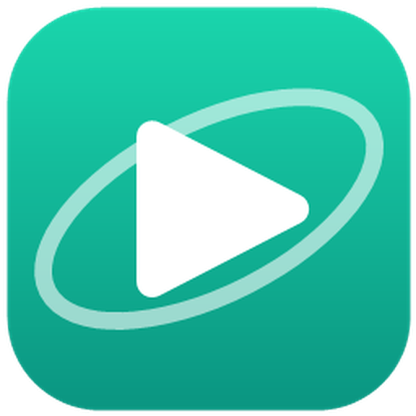

세도비 런처
학생관리 · 문제은행 · 디자인을 한 곳에서 켜는 Windows 프로그램입니다. 가입하면 누구나 자기 채널을 갖고, 초대를 받으면 다른 사람의 채널에도 들어갑니다.
내려받기Windows 10 · 11 (64비트) · 98MB · 깔면 최신 판으로 저절로 바뀝니다
지금 폰으로 보고 있습니다. 세도비 런처는 Windows 컴퓨터에 까는 프로그램입니다 —
컴퓨터에서 이 주소를 여세요.
설치 — 네 걸음
-
1
로그인 — 없으면 회원 가입
런처는 회원만 받을 수 있습니다. 내려받기 를 누르면 로그인 창이 뜹니다. 계정이 없으면 회원 가입 — 메일로 온 번호를 넣으면 끝입니다.
-
2
받기
로그인하면 이 쪽으로 돌아와
sedobi-setup.exe가 받아집니다. 안 받아지면 내려받기 를 한 번 더 누르세요.브라우저가 「흔히 다운로드되는 파일이 아닙니다」 라고 하면 파일 옆의 ⋯ → 유지 를 누르세요.
-
3
실행 — 파란 창이 뜨면 「추가 정보」 → 「실행」
받은 파일을 두 번 누릅니다. 처음에는 거의 다 아래 같은 파란 창이 뜹니다. 세도비 런처가 아직 마이크로소프트 서명을 받지 않은 새 프로그램이라서 뜨는 창입니다.
「앱: sedobi-setup.exe」 인지 꼭 보고 누르세요. 설치는 저절로 끝나고 런처가 켜집니다.
-
4
런처에 로그인
런처 오른쪽 위 로그인 을 누르고, 1번에서 쓴 같은 메일 · 비밀번호로 들어갑니다.
초대를 받았다면 초대받은 메일로 들어와서 이름 → 초대 관리 → 받은 초대에서 받기 를 누르세요. 앱을 켤 때 어느 채널로 열지 고르게 됩니다.
자주 묻는 것
- 업데이트는 어떻게 하나요?
런처가 새 판을 스스로 받아 옵니다. 다시 받아 깔 필요가 없습니다. - 런처의 「세진 과학」 칸(「웹」 이라고 적힌 칸)은 설치하나요?
아니요. 설치하는 게 아니라 누르면 이 사이트가 브라우저로 바로 열립니다. 런처에 로그인해 두면 사이트도 같이 로그인됩니다. - 맥(Mac)이나 폰에서도 되나요?
아직 Windows 컴퓨터만 됩니다. 강의 보기는 폰에서도 세진 과학 에서 됩니다. - 파란 창이 무섭습니다.
서명이 없는 새 프로그램이면 늘 뜨는 창입니다. 이 쪽(sejinedu.github.io)의 내려받기 로 받은sedobi-setup.exe만 실행하세요.